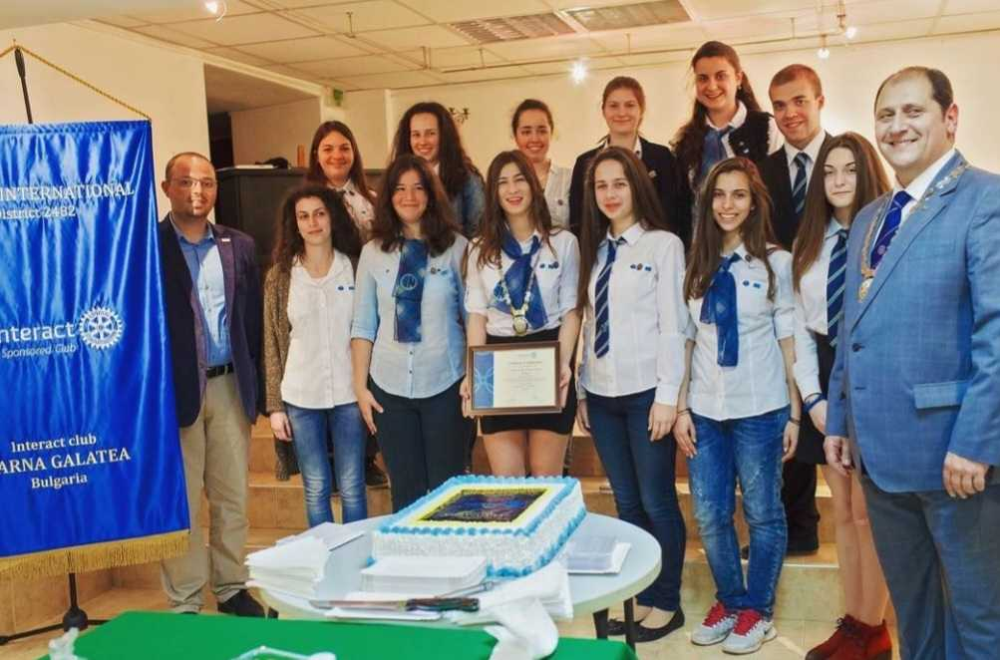
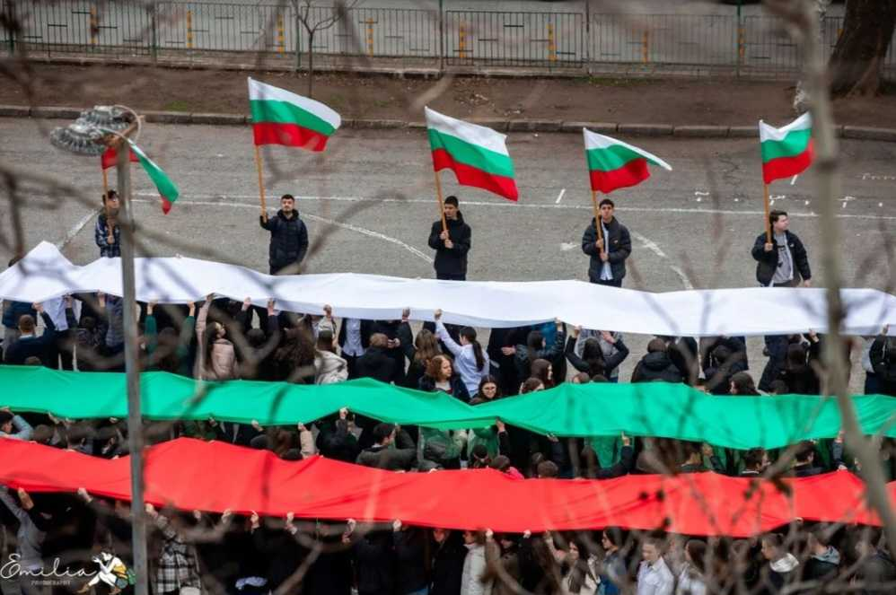

Ротари е доброволческа и неправителствена организация, чийто цели са международното разбирателство, възможността да бъдеш полезен и да служиш на обществото.
В света има повече от 32 000 клуба с над 1,2 милиона ротарианци. В световен мащаб Ротари спонсорира Ротаракт и Интеракт. Ротаракт е програма на Ротари за млади лидери на възраст от 18 до 30 години, а Интеракт клубовете са подходящи за младежи от 12 до 18 години. В Интеракт клубовете учениците могат да развият лидерски умения и да научат цената на личната отговорност.
Интеракт клуб "Варна Галатея" към ГПЧЕ "Йоан Екзарх" е чартиран на 19 май 2016 година. Традиционни инициативи на нашия клуб са "Късмет за смет" – връщане на стара хартия, предназначена за рециклиране, и издигане на огромен трибагреник на 3-ти март. ИАК "Варна Галатея" организира ежегодно също базар за учебници, а от две години се снима и подкастa "Student's talk", в който има информация не само за училищния живот, а и се провежда рубриката "Между редовете", в която Кристияна Тенева и Дебора Димитрова споделят любовта си към книгите. Членовете на клуба правят още много благотворителни дейности, с които подпомагат нуждаещите се и допринасят за положителна промяна в обществото.
 